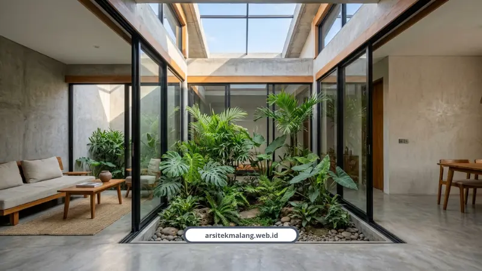

Ringkasan Inti
- Kavling 6x12 meter (72 m²) merupakan ukuran hunian standar perumahan paling umum di Malang Raya yang menuntut denah presisi agar tidak sumpek.
- Sinergi tiga siasat utama: open space tanpa sekat masif, inner courtyard 2x3 meter sebagai cerobong hawa, dan pemanfaatan ceruk multifungsi bawah tangga.
- Penelitian Universitas Brawijaya membuktikan optimalisasi bukaan ventilasi >10% luas lantai dan dinding trasram 50 cm menaikkan skor rumah sehat dari 53,25% ke 83,12%.
- Estimasi biaya konstruksi rumah minimalis modern 2 lantai di Malang berkisar antara Rp3,5 juta sampai Rp5,5 juta per meter persegi.
- Penyiapan berkas teknis DED arsitektur menjamin pengurusan izin PBG via SIMBG selesai maksimal 14 hari kerja tanpa kendala berkas ditolak.
Daftar Isi Artikel
- Kenapa Lahan 6x12 M² Jadi Ukuran yang Paling Sering Ditanyakan?
- Gimana Siasat Tata Ruang di Denah 6x12 M² Biar Nggak Sumpek?
- Apa Bukti Ilmiah Bahwa Ventilasi Alami Bikin Rumah Kecil Lebih Sehat?
- Berapa Estimasi Biaya Bangun Rumah Minimalis di Lahan 6x12 M²?
- Dokumen Apa Saja yang Dibutuhkan untuk Mengurus PBG di Malang?
- FAQ Seputar Denah Rumah Minimalis 6x12
Denah rumah minimalis paling efisien untuk lahan 6x12 meter memakai konsep open space dan inner courtyard sebagai cerobong udara alami. Rancangan ini bikin rumah tipe 36 terasa jauh lebih luas, terang, dan sejuk tanpa perlu bongkar total.
Kenapa Lahan 6x12 M² Jadi Ukuran yang Paling Sering Ditanyakan?
Kavling 6x12 meter atau sekitar 72 meter persegi adalah ukuran standar perumahan yang paling umum ditemukan di Malang Raya. Banyak keluarga muda dan pembeli rumah pertama mendarat di ukuran ini karena harga lahan yang makin mahal.
Masalahnya, tanpa perencanaan denah rumah minimalis yang matang, lahan seukuran ini gampang banget terasa sesak, apalagi kalau ruangan dibuat sekat-sekat kecil ala rumah lama.
Gimana Siasat Tata Ruang di Denah 6x12 M² Biar Nggak Sumpek?
Kuncinya ada di tiga hal: open space, inner courtyard, dan efisiensi sudut ruang. Ketiganya harus jalan bareng, bukan pilih salah satu:
- Open space tanpa sekat, ruang tamu, keluarga, makan, dan dapur menyatu dalam satu area terbuka.
- Pintu geser kaca bening masif memberi ilusi visual interior terasa dua kali lebih lapang.
- Inner courtyard 2x3 meter di tengah atau belakang rumah, berfungsi sebagai cerobong asap alami.
- Area bawah tangga dipakai untuk storage atau kabinet, bukan dibiarkan kosong begitu saja.
- Furnitur lipat atau terintegrasi, misalnya lemari yang bisa dibuka jadi meja kerja.
Untuk keluarga baru, satu lantai saja sudah cukup efisien. Tapi kalau butuh kamar lebih banyak atau ruang kerja tambahan, lahan 6x12 meter ini masih bisa dikembangkan vertikal sampai 2 atau 3 lantai lengkap dengan rooftop.

Catatan Arsitek Malang
Dalam mendesain kavling 6x12 meter, prioritaskan penempatan inner courtyard di titik temu antara ruang keluarga dan kamar tidur utama. Bukaan ini menciptakan efek cerobong termal yang terus menarik udara sejuk masuk ke seluruh penjuru rumah tanpa mengorbankan privasi antar penghuni.
Apa Bukti Ilmiah Bahwa Ventilasi Alami Bikin Rumah Kecil Lebih Sehat?
Ada penelitian dari Universitas Brawijaya yang mengevaluasi rumah tipe 36 di Perumahan Bulan Terang Utama Malang. Hasilnya cukup mengagetkan.
Kondisi eksisting rumah tipe 36 di sana cuma memenuhi 53,25 persen kriteria rumah sehat, karena bukaan ventilasi kurang dari 10 persen luas lantai dan dinding lembap tanpa lapisan trasram.
Setelah dioptimalkan, dengan menambah bukaan ventilasi di atas 10 persen luas lantai, pencahayaan alami di atas 100 lux, suhu ruangan dijaga di 27,4 derajat Celsius, dan pemasangan dinding trasram 50 cm dari sloof, skor rumah sehat naik jadi 83,12 persen.
Estimasi biaya konstruksi fisik untuk optimalisasi ini cuma sekitar Rp84.596.000, angka yang relatif kecil dibanding manfaat kesehatan jangka panjangnya.
Fifi Nur Alfrida dan Ary Deddy Putranto, peneliti arsitektur Universitas Brawijaya yang melakukan studi ini, menyimpulkan bahwa penambahan bukaan ventilasi dan lapisan dinding trasram terbukti menaikkan skor kualitas kesehatan hunian minimalis secara signifikan.
Berapa Estimasi Biaya Bangun Rumah Minimalis di Lahan 6x12 M²?
Perkiraan biaya konstruksi rumah minimalis modern 2 lantai di Malang berkisar antara Rp3,5 juta sampai Rp5,5 juta per meter persegi, tergantung spesifikasi material yang dipilih.
Muhammad Musyaffa, Arsitek Principal dengan pengalaman lebih dari 10 tahun di Malang Raya, menekankan pentingnya perhitungan yang presisi sejak awal.
"Penataan denah rumah di lahan terbatas seperti 6x12 meter di Malang memerlukan integrasi antara desain tropis modern, konsep open space, dan perhitungan RAB yang presisi. Ini memastikan bangunan tahan iklim Malang tanpa memicu pembengkakan anggaran saat eksekusi," ujar Musyaffa.
Isa, reviewer properti dari kanal Rumah Ideal TV, pernah meninjau rumah 6x12 meter bergaya monokrom di Araya Malang karya Andra Matin. Menurutnya kunci kenyamanan rumah ukuran terbatas ada di pemanfaatan setiap sudut interior, termasuk lemari multifungsi dan ketersediaan teras terbuka di belakang.
Dokumen Apa Saja yang Dibutuhkan untuk Mengurus PBG di Malang?
Ada dua kategori syarat, administrasi dan teknis, yang keduanya wajib lengkap sebelum diajukan lewat SIMBG:
- Syarat administrasi: form permohonan, fotokopi KTP, NPWPD, bukti kepemilikan tanah seperti sertifikat atau AJB, pelunasan PBB, dan surat pernyataan tetangga yang diketahui Lurah dan Camat.
- Syarat teknis: gambar bangunan skala 1:100, gambar situasi tanah 1:125 atau 1:500, detail konstruksi, serta perhitungan struktur untuk bangunan bertingkat.
Waktu penyelesaiannya maksimal 14 hari kerja sejak berkas dinyatakan lengkap. Dengan jasa arsitek profesional, gambar teknis presisi dan RAB terperinci sudah disiapkan sejak awal, jadi risiko berkas ditolak atau biaya siluman muncul di tengah jalan bisa ditekan jauh lebih kecil.
Kami sendiri sudah membahas lebih detail soal filosofi ruang dan efisiensi lahan ini di panduan desain rumah minimalis Malang yang mencakup strategi lengkap dari perencanaan sampai eksekusi.
Denah 6x12 meter di atas kertas kelihatan sederhana, tapi eksekusinya butuh perhitungan matang soal ventilasi, struktur, sampai legalitas. Salah satu saja meleset, rumah bisa terasa pengap atau malah bermasalah izinnya.
Tim kami biasa merancang denah serupa dan menyesuaikannya dengan kondisi lahan Anda di Malang Raya. Lihat layanan desain dan bangun rumah kami di sini untuk mulai konsultasi gratis.
FAQ Seputar Denah Rumah Minimalis 6x12
Denah 6x12 M² Cocok untuk Rumah Berapa Kamar Tidur?
Untuk 1 lantai biasanya cukup untuk 2 kamar tidur plus ruang keluarga yang lega. Kalau dikembangkan ke 2 atau 3 lantai, denah 6x12 meter bisa memuat 3 sampai 4 kamar tidur tanpa mengorbankan ruang komunal di lantai bawah.
Apakah Inner Courtyard Bikin Rumah Rawan Bocor Saat Hujan?
Tidak, asalkan sistem drainase dan kemiringan lantai di area courtyard dirancang benar sejak awal oleh tim struktur. Justru inner courtyard yang dirancang tepat membantu menyerap air hujan lewat biopori kecil di dalamnya.
- Alfrida, F. N., & Putranto, A. D. Optimalisasi Rumah Murah Tipe 36 Menjadi Rumah Sehat (Studi Kasus Perumahan Bulan Terang Utama, Malang). Jurusan Arsitektur, Universitas Brawijaya.
- Dinas Penanaman Modal dan Pelayanan Terpadu Satu Pintu (DPMPTSP) Kabupaten Malang. Standar Pelayanan Izin Mendirikan Bangunan (IMB/PBG).
- Rumah Ideal TV. Review Inspirasi Rumah Ukuran 6x12 Konsep Monokrom karya Andra Matin di Araya Malang.
Mau Denah Rumah Minimalis yang Dirancang Khusus untuk Lahan Anda?
Rencanakan denah open space hemat energi, gambar 3D fotorealistik, dan pengurusan legalitas PBG bersama tim arsitek berlisensi kami.

Naura Regyna Putri
Penulis & Tim Riset Arsitektur Maroon Arsitek Malang, spesialis perencanaan denah hunian kompak, standar rumah sehat tropis, dan legalitas SIMBG.